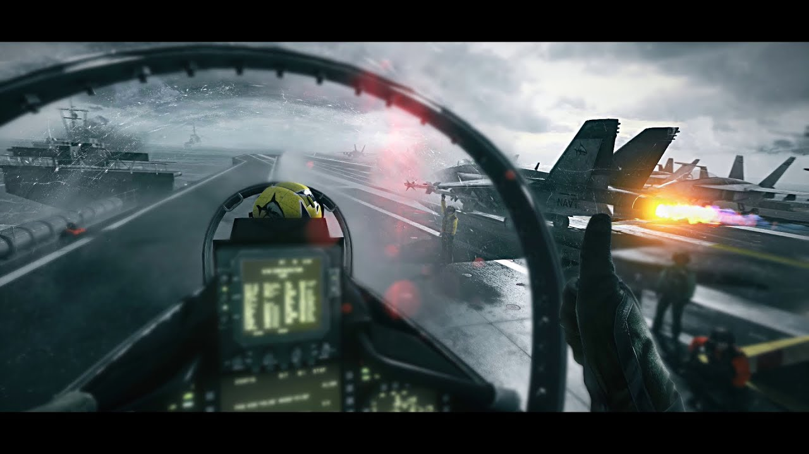

esportsの種目紹介
FPS（ファーストパーソンシューティング）とは
FPSとは、自分のキャラクターを一人称視点で操作し、コンピュータが操作するキャラクターや他のプレイヤーが操作しているキ ャラクターを倒すというオンラインシューティングゲームのことです。ゲームの内容としては、銃を使って相手と対戦し合うもの が多いようです。
Battlefield 3
制限時間内に、相手プレイヤーをたくさん倒したチームの勝ちというチーム戦のゲームです。舞台は戦争で、銃系統のものや 乗り物などが豊富で、相手を倒す手段がたくさんあります。また、戦うマップも広く、聞こえてくる銃声もとてもリアルで、ゲームの クオリティが高いです。そのようなゲームはグラフィックがイマイチなことも多いですがこのゲームはそんなことはなく、むしろ 普通のゲームよりもきれいに仕上がっています。


コール オブ デューティ
基本的にはバトルフィールドとあまり大差ないように感じます。ただコールオブデューティは、初めてFPSをやる人のためにチュートリアル で基本操作を教えてくれたり、敵の近くを狙ったら自動で標準を合わせてくれるシステムがついているので初心者に優しくなっています。 また様々な登場人物のストーリーが描かれており、プレイしているうちに没入していってしまうし、オンライン対戦機能もあります。 オンライン対戦は最大人数が18人と少ないですが、やられてもすぐに復活するので大人数でプレイしているのとそんなに感覚は変わりません。 また、キャラクターの体力が少なく設定してあるので、正面からの打ち合いになるというよりは、地形や道具を使い、戦略が大事になるゲームです。 これらがこのゲームの魅力です。
カウンターストライク
カウンターストライクとは、テロリストと特殊部隊の対立を舞台とした世界で最も遊ばれているFPSの1つです。プレイヤーはテロリスト側、特殊部隊 側のどちらでも選ぶことができ、マップで決められた目的を達成するか相手キャラクターを全て倒せば、自分チームの勝利となります。大会で主に 使用されるのは爆弾解除モードです。このモードではゲーム内で得た賞金を使い武器を買うことができ、もし自分が相手に倒されてしまった場合その武器を 落としてしまいます。その武器は相手も拾うことができ、最悪の場合そのまま奪われてしまいます。このシステムのおかげで圧倒的だった戦力差もひっくり 返ることもあり、より白熱した戦いになります。ただ、武器を奪われたプレイヤーはただただ苦痛でしかありません。
RTSとは
RTSとは、戦況がリアルタイムで変化していき、それに合わせて戦略を立て、相手を倒した方の勝利というオンライン対戦ゲームです。 自分も今ハマっているクラッシュロワイヤルというゲームがあるのですが、それもこのRTSの一種です。こちらもいくつか紹介して いこうと思います。
Clash of Clan
このゲームは自分の村が1つ与えられ、その村の住人を守るため敵を攻撃するための大砲、侵入を防ぐための壁などの防衛施設を建てて いき、村のレベルを上げていくと同時に、施設のレベルを上げるための資源を他のプレイヤーの村から略奪するオンラインゲームです。 他の村を攻撃する時には自分の村から資源を使ってユニットというモンスターを作り、それらを相手の村に送り込むことで攻撃できます。 そのユニットは数十種類あり、村のレベルを上げていくことで徐々に使えるようになります。相手の村を攻撃する時に自分の村から連れていける ユニットの数は限られています。また、送り出すタイミングは自分の自由にすることができます。自分で攻撃するユニットの編成を考え、 戦況を見ながらユニットを追加して有利に持っていく、これがCrash of Clanの１番面白いところだと思います。
StarClaft Ⅱ
このゲームはテラン、ザーグ、プロトスの３種族があり、最初にどのチームに分かれるか決めます。その時に決めた自分の種族以外の種族の建造物を 壊せば自分たちの勝ちになります。ただ最初の段階では自分がいま獲得している土地のマップしか分からず、敵がどこにいるか分かりません。敵がどこから 攻めてくるかを考えながら自分の陣地を広げていく必要があります。種族を選んだらマップが表示され、労働者（ワーカー）を手に入れます。このワーカーを 資源のある場所へ移動させると資源を回収してくれます。その資源を使って自分の軍を作ることができます。この軍を展開していくことでゲームが進んでいきま す。ただこのゲームは制限時間などはなく、ターン制でもなく、リアルタイムでの戦いになるので、プロ同士が対決すると最大で４時間以上かかったこともある そうです。
Age of Empires Ⅲ
このゲームには自分が扱う文明として、イギリス、ドイツ、ロシア、オランダ、フランスなどのヨーロッパが最初の段階から扱えて、拡張パックを使うことで 日本や中国などのアジア文明など様々な文明を追加することができます。設定では本国から植民地を開拓するために派遣されたということになっています。 そのため本国から支援を受けることができます。その支援をカードという形で受け取るようになっています。そのため全１４か国のカードを合わせると２００種類 以上もあります。それらのカードを使い、自分だけのデッキを作り、プレイしていくというゲームです。
TPS（サードパーソンシューティング）とは
TPSとはFPSとは違い、第3者視点からキャラクターを操作します。つまり操作キャラの姿が全部見えています。それ以外は大体FPSと 同じです。FPSと混同する人が多いようなので注意してください。
スプラトゥーン
次はスプラトゥーンの説明です。名前くらいは聞いたことあるのではないでしょうか。このゲームは人型のイカを操作し、インクを 飛ばすシューティングゲームです。自分の色が決まっていて、インクを相手に塗り付ければ相手を倒すことができます。逆にその色 以外の色を当てられ続けたり、違う色で塗られた床などに長いこといると倒されてしまいます。基本は４対４のチーム戦で行い、最 後に床を自分の色でたくさん塗っていたチームの勝利や、アイテムを相手の陣地まで運んだ方の勝ちなど、様々な対戦ルールがあります。 また、ローラーやバケツなど、個性的な武器がたくさんあり、戦い方は様々です。自分の性格に合った武器を選びましょう。
PUBG
PUBGとは、最大100人のプレイヤーが８×８kmの無人島で生き残りをかけたバトルロワイヤルです。開始時は持ち物が何もなく、道具を 揃えることから始まります。島に落ちている物を拾ったり、相手を倒して荷物を奪ったりして回復アイテムから銃などの武器まで調達していきます。 普通のFPSゲームなら1度やられただけなら復活できますが、PUBGは1度やられたらそこで終わりで、また100人の状態から始めます。苦労して 集めた武器もどんなに強い装備がそろっても、1度負けちゃったら全てなくなります。悲しいですね。 また、時間が経つにつれて、無人島の端から触れるとダメージを受けるガスが迫ってきます。このせいでいつまでも建物に隠れていたりしたら どんどん体力が削られていってしまいます。最終的にはキャラクター1人ギリギリ入れるくらいの範囲まで狭まります。そうなると お互いの体力が尽きるまで近距離での打ち合いになります。めったに見ない光景ですが逆に面白いかもしれません。
FortNite
FORTNITEはPUBGに建築要素を足したゲームです。それ以外はほとんど変わりません。FORTNITEは何もない場所から建築を行うことで 自分の身を隠すための簡単な壁や、あたりを見渡したり敵を倒すことに適した要塞まで幅広く作ることができます。このプレイヤーの 建築技術が最後まで生き残れるかの生命線です。そういっても過言ではないくらいこのゲームのおいて、建築技術は大切です。また、PUBGが 現実に忠実に作られたゲームであるのに対し、FORTNITEはファンタジー要素が強くなっています。FORTNITEではこのファンタジー要素をいかに生かすか が勝負のカギとなりそうです。
格闘ゲームとは
格闘ゲームとは、プレイヤーが操作するキャラクター対コンピュータ、あるいは他のプレイヤーが格闘技で戦い、相手の体力を減ら していき、最後まで勝ち残ったプレイヤーが勝利というゲームです。複数人で競うこともできますが、esportsでは１対１での対戦 が一般的です。
大乱闘スマッシュブラザーズ
任天堂のキャラクターを操作し、相手と戦うゲームです。他のゲームと大きく違うのは操作キャラクターの体力が決まっていない ということです。キャラクターを戦わせるステージがあり、そのステージ上から相手を落とせば自分の勝ちになります。攻撃を受けると 体力の代わりに「吹っ飛び率（％）」がたまっていきます。開始時は０％ですが攻撃を受けて１０％、２０％とたまっていくにつれ、 相手の攻撃によってステージ外に落とされやすくなります。
鉄拳
鉄拳は1対1の対戦格闘ゲームです。世界に対して戦線布告し、戦争をはじめた三島財閥の頭首・風間仁が行方不明になってしまい、 風間仁の親である三島一八率いる三島財閥対抗組織・G社の圧倒的優勢な状況が続いた中、三島財閥初代頭首・三島平八が1人でG社へ 乗り込み、世界最大級の親子喧嘩の終結を描いたストーリーです。このゲームの特徴としては、ただの格闘ゲームでは2次元での戦いで 奥行きが存在しないフィールドで決闘しているのに対し、奥行きが存在します。これにより攻撃・回避の幅が大きく広がり、より戦略を 練りがいのあるゲームとなりました。
ストリートファイター
同じく、1対1の対戦格闘ゲームです。幼いころから格闘技を学んできた格闘家・リュウとそのライバル・ケンが世界中の強敵を倒し、 最強の格闘家を目指し、ストリートファイトの旅へ出るストーリーを描いたゲームです。PS4からwii、アーケード版など様々なゲーム機で プレイ可能です。なお、多くのキャラクターが存在し、その1人1人が必殺技を使うことができます。リュウの波動拳などは聞いたことが あるかもしれません。
スポーツゲームとは
スポーツを題材としたシミュレーションゲームです。選手を育成したり、自分が監督となって行う種類もありますが、選手を操作 し、スポーツを行うアクションゲームがほとんどです。esportsに追加されているのもそのようなアクションゲームばかりです。
ウイニングイレブン
ウイニングイレブンとはサッカーのシミュレーションゲームです。登場選手は全て現実の選手でそれぞれに合った身体能力の数値が割り振られています。 自分の中で好きな選手を11人選びチームを作ることで対戦が行えます。対戦中は11人を同時に操作するのではなく、ボールの一番近くにいる選手を操作することができます。 操作して今井残りの10人は勝手に動いてくれます。ゲームモードもリーグや、カップなどいろいろあり、サッカーを楽しむ要素が詰まっています。
NBA
世界で8千万本以上の売り上げを記録したNBA公認のバスケットボールゲームです。とてもリアルに再現されており、本物のNBA選手が試合のシミュレーションとして 使うほど完成度が高いです。自分で作ったキャラクターを育成して試合に出したり、実際のNBA選手同士で白熱の試合をしたり、様々なゲームモードで楽しむことができます。パズルゲームとは
パズルゲームとは各ゲームによって与えられたパズルを解くことで、高得点を出したり、ステージをクリアしたり、モンスターが攻撃 したりなどして、目標を達成していくゲームです。スマホゲームの代表的なもので知名度のあるパズル＆ドラゴンズもパズルゲームの 一種です。でも、残念ながらパズドラはesportsには登録されていません。
ぷよぷよ
今では知らない人はいないであろう人気ゲーム、ぷよぷよです。簡単に説明すると、ぷよぷよと呼ばれる5色のモンスターを限られたフィールドの中で４体以上繋げ、消滅させ、 その時に生じる得点をたくさん獲得した方が勝利という１対１の対戦ゲームです。消滅させたときには得点の他に相手のフィールドを狭めるお邪魔アイテムも生み出すことができ、 消滅を連続させて行うことができるとその時に得た得点もお邪魔アイテムの量も大きく上がります。消滅を繰り返すことを連鎖といい、トッププレイヤー同士の対決になると連鎖の 打ち合いになります。コツをつかめたら簡単にできるらしいですが、僕にはできる気がしません。テトリス
限られたフィールドに決まった形のブロックが上から落ちてきます。そのブロックは上方向以外なら自由に操作することができ、フィールドに置いていきます。それを続けていき 横１列がブロックで埋められるとその列のブロックが消滅します。その時にぷよぷよ同様に得点とお邪魔アイテムの両方が得られます。そして、相手のフィールでを埋め、ブロックを 置けな井状態にしたら、自分の勝利となります。
TCG（トレーディングカードゲーム）とは
TCGとはカードを用いて行う１対１の対戦ゲームです。プレイヤーは集めたカードでデッキを作り、そのデッキを使い、相手の体力を ０にした方の勝利となります。世の中にはコンピュータの中だけでなく実物のカードを使ったTCGもたくさん存在します。
シャドウバース
１対１の対戦カードゲームです。プレイヤーの体力は２０でモンスター、スペル、アミュレットの３種類のカードを使い、相手の体力を０にした方の勝ちです。自分が操作することのできる キャラクタ－は８体いて各キャラクターによって使うことのできるカードが全然違うので、自分に合ったプレイスタイルを見つけましょう。また、シャドウバースはエフェクトがきれいです。 声優陣も豪華らしく、普通とは違った楽しみもあるかもしれません。
ハースストーン
このゲームはシャドウバースと似ています。というより、シャドウバースのもとになったのがこのゲームです。ハースストーンは課金などしなくてもゲーム内で手に入るゴールドで全ての コンテンツを買うことができます。ハースストーンは９体のヒーローの中から自分が操作するキャラクターを選択します。体力を０にした方の勝利です。他のカードゲームと比べて簡単な ルールであり、奥が深い。何より自分がいらないカードを手に入れてもそのカードを違うカードと交換するシステムがついています。つまり、初心者にとってとても始めやすいシステムとなったいます。 カードゲームをやったことがない人は１度やってみてはいかがでしょうか。